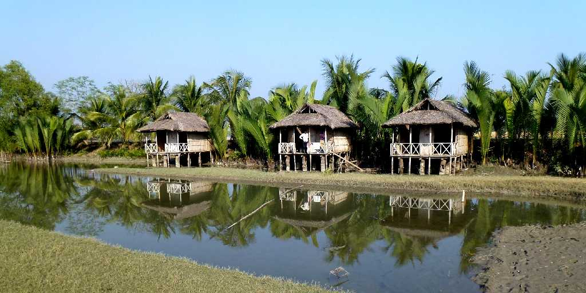
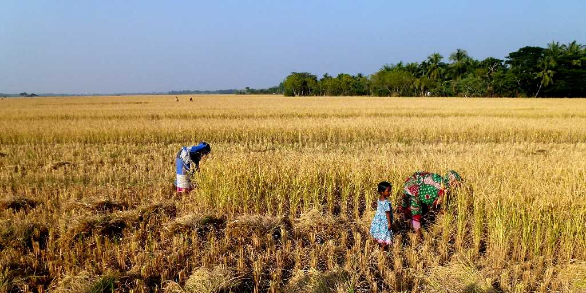
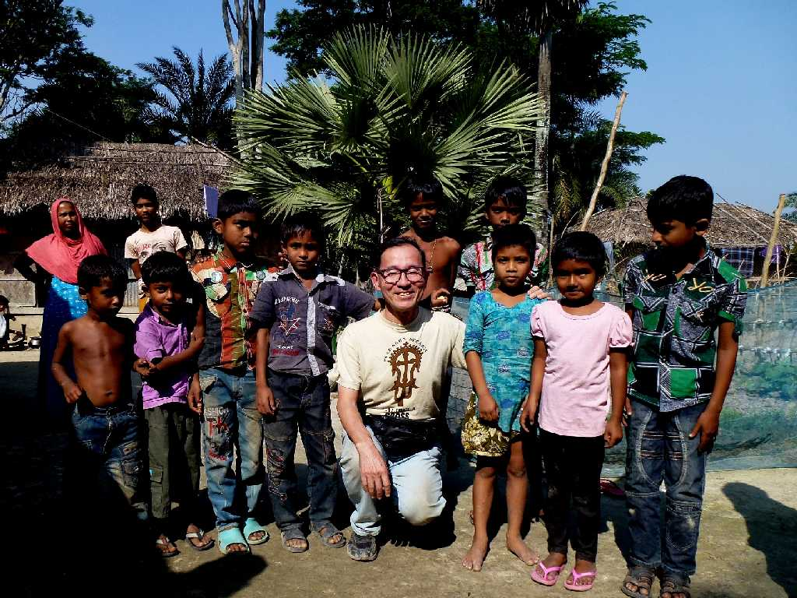
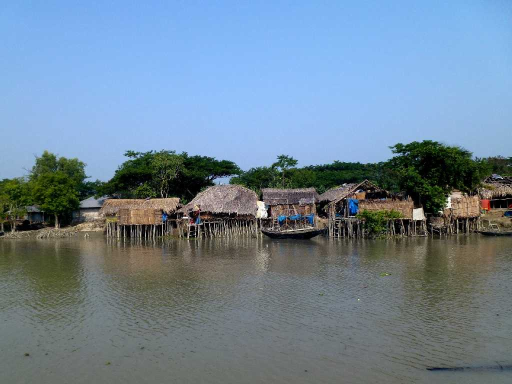

Chandpai Range Village Sundarban National Park

Rice Farm Chandpai Range Village Sundarban National Park
三毛作か四毛作ができる黄金の大地バングラデシュ 稲刈りをする村人達

December 18 2013 Chandpai Range Village Sundarban National Park

Chandpai Village Chandpai Range Sundarban National Park